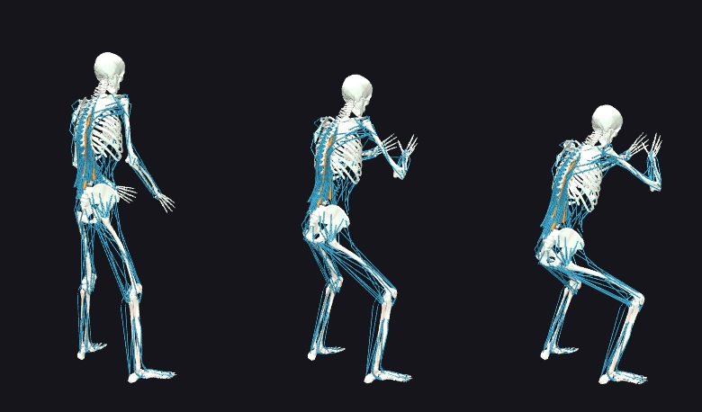

FitGen 研究汇报 / 2026.11.23
SuperMimic
六组实验
从动作泛化与网络容量，到深蹲中的肌肉激活

实验设计
六组策略依次改变了什么？
从只学 CLIP 动作的策略出发，依次检验激活惩罚、混合训练、网络容量和肌束权重。
| 实验与训练数据 | 网络 | 激活惩罚 | 复测轮数 | 无跌倒 | 全程跟踪 |
|---|---|---|---|---|---|
| 1 纯 CLIP¹ | 标准 | 无 | 54,000 | 71.04% | 13.75% |
| 2 纯 CLIP | 标准 | 质量加权 | 23,000 | 70.20% | 11.45% |
| 3 CLIP＋BONES | 标准 | 质量加权 | 24,000 | 72.76% | 11.09% |
| 4 纯 CLIP | 加宽 | 质量加权 | 93,000 | 78.47% | 22.28% |
| 5 CLIP＋BONES | 加宽 | 质量加权 | 29,000 | 74.53% | 16.25% |
| 6 纯 CLIP | 加宽 | 等权 | 50,000 | 76.93% | 16.90% |
¹ 实验 1 使用旧 CLIP 测试集 6,080 段。实验 2–6 使用同一 CLIP 验证集 3,047 段。表中轮数标识后续分析实际复测的 checkpoint。
实验 1 → 实验 2
为什么在跟踪奖励中加入激活惩罚？
实验 1 的纯 CLIP 策略只优化跟踪。早期 HIIT 实测对照已经显示，即使能完成动作，模型也可能持续招募大量肌束，高估能耗。
早期 HIIT 无约束策略，18,500 轮
| 动作（9.96 秒） | 平均激活 ≥ 0.8 | 估计能耗 | 代谢仪 | 估计 / 实测 |
|---|---|---|---|---|
| ZY 下蹲 | 137 束 | 21.12 kJ | 9.91 kJ | 2.13 倍 |
| JL 展臂踏步 | 123 束 | 16.64 kJ | 6.40 kJ | 2.60 倍 |
能量采用参考质量版 Umberger 估计，352 个有效通道，未加基础代谢。实测由代谢仪 10 秒均值折算到 9.96 秒。两段来自独立的 HIIT 基线。
相同 262 段 HIIT 上的平均能耗
| 实测 | 公开策略 · 16,000 | 实验 2 · 23,000 | 实验 5 · 29,000 |
|---|---|---|---|
| 6.93 kJ | 17.57 kJ | 9.10 kJ | 8.78 kJ |
三策略共同无跌倒，每段 9.96 秒。公开策略作为外部参照。
实验 2 → 实验 3、5
纯 CLIP 学到的动作能迁移到 BONES 吗？
为检验训练动作覆盖的影响，引入 CLIP＋BONES 混合训练。五个冻结策略复测同一批 77 段、22 族明确无需道具的 BONES 动作。
| 策略 / 轮数 | 完整无跌倒 | 全程跟踪 | 17 点误差 |
|---|---|---|---|
| 纯 CLIP 标准 · 54,000（无惩罚） | 68 / 77 | 29 / 77 | 27.15 cm |
| 纯 CLIP 标准 · 23,000 | 67 / 77 | 30 / 77 | 25.48 cm |
| 混合标准 · 24,000 | 71 / 77 | 32 / 77 | 24.98 cm |
| 纯 CLIP 加宽 · 93,000 | 71 / 77 | 37 / 77 | 20.13 cm |
| 混合加宽 · 29,000 | 68 / 77 | 31 / 77 | 20.36 cm |
纯 CLIP 加宽策略在舞蹈中跟准 21 / 25 段，步态与跳转为 11 / 30，热身及姿态转换为 5 / 22。泛化程度随动作族变化。
实验 2 → 实验 4
同轮数加宽，两项通过率小幅上升
固定纯 CLIP 数据划分和质量加权成本。在 21,000–26,000 轮，按轮数配对六次完整验证。
| 加宽 − 标准网络 | 六次配对的平均差 |
|---|---|
| 完整无跌倒率 | ＋1.29 个百分点 |
| 全程跟踪通过率 | ＋1.11 个百分点 |
| 17 点平均位置误差 | ＋1.09 cm |
加宽后每轮并行环境也从 16,384 增到 24,576。两项通过率略升，位置误差平均增大。
补充对照：把两种加宽策略都固定在 29,000 轮，纯 CLIP 与混合的全程跟踪通过率分别为 13.42% 和 16.25%，完整无跌倒率分别为 74.96% 和 74.53%。
实验 5 的动作回放
深蹲时，平均激活最高的五束都在背部
从单段观察到多动作复核
哪些肌束反复保持高激活？
从 436 段 HIIT 随机抽取 131 段，取三个策略都完整无跌倒的 85 段。对每一束，检查高激活是否同时跨越时间和动作。
| 质量加权策略 | 反复高激活 | 这些束的平均激活 | 合计质量占比 |
|---|---|---|---|
| 纯 CLIP 标准 · 23,000 | 24 束 | 95.1% | 0.388% |
| 混合加宽 · 29,000 | 33 束 | 95.3% | 0.377% |
| 纯 CLIP 加宽 · 93,000 | 55 束 | 96.2% | 0.572% |
93,000 轮策略的这 55 束质量中位数为 1.98 g，其余肌束为 20.39 g。质量小的肌束即使长期接近满激活，对整体成本的贡献也有限。
实验 4 → 实验 6
改为等权后，持续高激活的肌束减少
保留纯 CLIP、加宽网络、随机种子与惩罚系数。实验 6 将成本改为 354 束实际激活平方的算术平均，每束满激活的扣分相同。
两种策略都完整无跌倒的 5 段 HIIT
全身平均激活
平均每段持续高激活肌束
实验 4 与 6 同轮对照
背部激活下降，深蹲的跟踪误差增大
同一段 9.96 秒深蹲，两组均全程跟踪通过
| 指标 | 质量加权 · 50,000 | 等权 · 50,000 |
|---|---|---|
| 多裂肌平均激活 | 80.7% | 31.8% |
| 腰方肌平均激活 | 76.7% | 16.9% |
| 股四头肌平均激活 | 27.6% | 31.6% |
| 臀大肌平均激活 | 14.4% | 16.4% |
| 持续高激活肌束数 | 78 / 354 | 18 / 354 |
| 17 点平均误差 | 5.7 cm | 9.9 cm |
等权策略中激活最高的五束仍在背部。现有记录支持小肌束饱和有所缓解，生理准确性仍需肌电和能耗对照。
3,047 段 CLIP 验证完整无跌倒率从 76.30% 升至 76.93%，全程跟踪通过率从 18.81% 降至 16.90%。
能耗验证
模型与手环，各自和实测能耗有多一致？
模型以两位受试者的 HIIT 片段为样本，手环研究以受试者为样本。表中相关性和误差均相对于各自的代谢实测值。
| checkpoint 或设备 | 样本 | Pearson r | Spearman ρ | ICC | MAPE |
|---|---|---|---|---|---|
| 实验 2 纯 CLIP · 23,000 | 311 段 | 0.317 | 0.326 | 0.180 | 46.01% |
| 实验 5 混合加宽 · 29,000 | 327 段 | 0.403 | 0.377 | 0.245 | 40.12% |
| Galaxy Watch 6 间歇跑 | 79 人 | — | 0.630 | 0.650 | 10.10% |
| Galaxy Watch 7 间歇跑 | 69 人 | — | 0.700 | 0.740 | 12.55% |
| Apple Watch 6 步行 / 跑步 | 20 人 | — | — | 0.821 / 0.741 | 19.8% / 24.4% |
| Garmin FENIX 6 步行 / 跑步 | 20 人 | — | — | 0.216 / 0.594 | 32.0% / 21.8% |
| Huawei GT 2e 步行 / 跑步 | 19 人 | — | — | 0.760 / 0.698 | 9.9% / 11.9% |
模型各自取完整无跌倒集，集合不同。模型与设备来自不同研究，数值只作参照。— 表示该项未报告。
同一批 292 段共同无跌倒片段、固定 348 束时，实验 2 / 5 的 Pearson r 为 0.324 / 0.412。实验 1、3、4、6 在本次核对的材料中缺少同口径相关系数。
模型全部无跌倒及严格跟踪行来自 hiit_energy_metrics_20261110/metrics.json，起步修正与正式完成行来自 hiit_energy_metrics_new_rule_20261111/comparison.csv 和 metrics.json。各自片段集、未加基础项的肌肉能量。ICC 为绝对一致性单次测量 ICC(A,1)，MAPE 为平均绝对百分比误差。对照设备录入受试者身高和体重，模型固定体型。步行与跑步按此顺序列出。手环原文见 Galaxy Watch 6 / 7 研究、三款手表的步行与跑步研究。